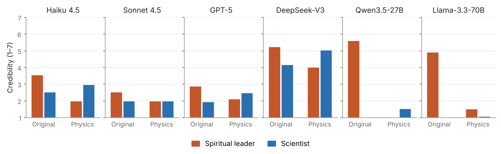

Abstract
Much of what people believe about the unseen, from germs to spirits, rests on testimony that cannot be checked. We ask how six language models weigh such testimony when it concerns the spiritual and when it concerns the natural, using two paradigms with human data and one new design. In all three, models treat the spiritual as a separate epistemic domain. It has its own credible sources. People credit an obscure New-Age statement more when a scientist says it, while models credit it more from a spiritual leader and switch to the scientist once the statement uses the vocabulary of physics. It has its own standard for an adequate answer. When a trusted expert calls the mechanism behind a belief a mystery, people lose confidence in religious and scientific beliefs, while models prompted as those same people lose it for science and keep it for religion. And credibility earned elsewhere does not readily carry into it. When a fictional forecaster builds a record on checkable river predictions, five models extend that record to hidden natural causes and almost none of it to spiritual ones, and every model trusts the forecaster less about natural causes once the forecaster credits a river spirit. For four of the five models this gap is not a floor effect. It remains when they answer as residents of a village where spirits are taken to exist and rate the spiritual claims well above the bottom of the scale. For the fifth the gap closes in that setting. One model extends the record to spiritual claims once the forecaster in that village credits a spirit, which suggests that transfer can depend on whether the record is seen as bearing on the claim.
1. Introduction
No one checks for themselves that germs cause fevers, or that the dead linger near a burial ground. Beliefs about what cannot be seen, natural or spiritual, come from other people, and they depend on whom one trusts and about what (Harris et al. 2006). Language models are now among the sources people consult, and they are routinely asked to weigh what someone says about things no one in the conversation can verify. This paper asks whether models weigh testimony about the spiritual the way they weigh testimony about the natural.
A hearer faces three questions about any piece of testimony, and people answer each of them differently for the two domains. The first is who counts as a credible source: adults in 24 countries give the same obscure statement more credit when it is attributed to a scientist than to a spiritual guru (Hoogeveen et al. 2022). The second is what counts as an adequate answer: an expert who says “it’s a mystery” damages a scientific belief more than a religious one (Davoodi and Lombrozo 2022). The third is how far a record of being right extends. Children prefer informants who have been accurate before (Koenig, Clément, and Harris 2004; Pasquini et al. 2007), and they limit that preference by domain and by how the accuracy came about (Koenig and Jaswal 2011; Einav and Robinson 2011).
Work on language models has addressed these questions without the spiritual–natural contrast. Models have systematic preferences among attributed sources (Khan et al. 2026) and can condition trust on a source’s interaction history (Zhou et al. 2026), and whether a source’s credibility should depend on the claim has been named as an open problem (Ashkinaze et al. 2026).
We run one study on each question in the same six models. Study 1 adapts the scientist-versus-guru paradigm and Study 2 the expert-ignorance paradigm, both with the original human data for comparison. Study 3 is a new design: two informants in a fictional village earn different records on checkable river forecasts, and each then endorses matched natural and spiritual explanations of the same village events.
The three studies give one answer. Models treat the spiritual as a separate epistemic domain. It has its own credible sources: a spiritual leader is believed over a scientist on New-Age statements and loses that standing on physics statements, where people favor the scientist throughout. It has its own standard of explanation: “it’s a mystery” leaves models’ religious confidence intact and lowers their scientific confidence, where people lose confidence in both. And credibility earned outside it does not carry in: five of six models extend a forecaster’s record to hidden natural causes and almost none of it to spiritual ones. The boundary also works in the other direction, since a reliable forecaster who credits a river spirit is trusted less about natural causes. Where human data exist, people draw these lines less sharply than the models do. For four of the five models that extend the record, the gap in Study 3 remains when a change of frame lifts spiritual claims well off the bottom of the scale. For the fifth it closes.
2. Related work
2.1 Testimony and the scope of expertise
Children learn much of what they know from other people and are selective about whom to believe. Preschoolers who watch two informants label familiar objects go on to prefer the accurate one for novel labels (Koenig, Clément, and Harris 2004), and four-year-olds track relative accuracy (Pasquini et al. 2007). They distinguish informants who were right on their own from those who were right with help (Einav and Robinson 2011), expect a specialist’s knowledge to have limits (Landrum and Mills 2015), and weigh an informant’s expertise against how plausible the claim is (Lane and Harris 2015). Expertise does not generalize freely across domains, while incompetence does (Koenig and Jaswal 2011). Confidence in unseen entities tracks the testimony children receive and differs by kind of entity (Harris et al. 2006). This literature treats a source’s success at one task and a source’s knowledge of another as separate questions, and Study 3 is built on that separation.
Two adult paradigms supply our human reference data. The Einstein effect is the credibility a source’s identity lends to a statement (Hoogeveen et al. 2022). Davoodi and Lombrozo show that the same admission of expert ignorance has different consequences for scientific and religious beliefs (Davoodi and Lombrozo 2022).
2.2 Source trust in language models
Khan and colleagues document systematic preferences among attributed sources, including sensitivity to framing (Khan et al. 2026). Study 1 takes source-label effects as given and asks how their direction depends on content. Epistemic Context Learning shows that models can condition trust on peers’ interaction histories (Zhou et al. 2026). We also supply a record in context, and we vary which claims the record is applied to and how the source explains their own competence.
Learn2Discern is the closest benchmark (Ashkinaze et al. 2026). It attributes perturbed answers to real news sites whose reliability is scored externally, separates poor reliability estimation from under-use of a correct estimate, and flags claim-dependent credibility as a limit of source-level ratings. Study 3 starts from that limit. It gives identical records to fictional informants, holds each target claim fixed across source conditions, and compares explanations of the same event that differ only in whether the cause is natural or spiritual. The target causes have no truth value inside the task, so a smaller effect on spiritual claims measures the record’s scope and is not scored as an error.
3. Models and response formats
We evaluate Claude Haiku 4.5, Claude Sonnet 4.5, GPT-5,
DeepSeek-V3-0324, Qwen3.5-27B, and Llama-3.3-70B-Instruct (identifiers
claude-haiku-4-5, claude-sonnet-4-5,
gpt-5, deepseek/deepseek-chat-v3-0324,
qwen/qwen3.5-27b,
meta-llama/llama-3.3-70b-instruct). Anthropic and OpenAI
models were called through their vendor APIs, the other three through
OpenRouter with reasoning disabled. Qwen was pinned to a single backend
(Novita, no fallback routing). Sampling temperature was 1 for Anthropic
and OpenRouter requests; GPT-5 calls requested minimal reasoning effort
and take no temperature argument.
Studies 1 and 2 use two response formats. In the participant-conditioned format, one human participant’s demographic and attitude responses are written as sentences in the system prompt and the model answers as that person, which links each model trial to an original human trial. In the direct format, the model answers as itself. Study 3 uses the direct format and lets the model reason briefly before its final answer. Appendix A describes data handling and the coverage of secondary conditions.
4. Study 1: Who sounds credible?
4.1 Method
In the Einstein-effect paradigm (Hoogeveen et al. 2022), the same obscure, pseudo-profound statements are attributed to a scientist or to a spiritual guru. The original study collected judgments from 10,195 participants in 24 countries. We sampled 301 participant profiles, stratified by country and religiosity tercile, and gave each model the two trials that participant saw, with the same statement–source pairing. Models rated credibility on the original seven-point scale, one rating per call.
We added a second content set: two statements we wrote with the same sentence structure and the vocabulary of physics. Like the originals, they are meaningless by design. Appendix B gives all four statements and the prompts. Both sets were run in both formats. Human data exist for the original statements only.
4.2 Results
Humans rate the scientist’s statement at 4.34 and the spiritual leader’s at 3.69, a difference of 0.64 (Figure 1). Models order the two sources the other way. On the original statements the spiritual leader is rated above the scientist in ten of twelve model-by-format cells (Table 1). In the other two, DeepSeek and Qwen in the participant-conditioned format, the two sources are rated the same (differences of −0.02 and −0.05, each within one standard error of zero).

Rewording the statements in physics vocabulary moves the spiritual leader’s rating far more than the scientist’s. The leader’s rating falls in all twelve cells, by 0.40 to 4.60 points. The scientist’s rating rises in ten cells, by at most 0.89. The reversal comes mainly from a spiritual leader losing credibility when he speaks in the vocabulary of physics. After rewording, ten of twelve cells favor the scientist; Sonnet in the direct format is tied and Llama in the direct format still leans toward the spiritual leader.
| Model | Original P | Physics P | Original D | Physics D |
|---|---|---|---|---|
| Haiku 4.5 | -0.33 | +1.36 | -1.02 | +0.97 |
| Sonnet 4.5 | -0.32 | +0.64 | -0.53 | +0.00 |
| GPT-5 | -0.84 | +0.33 | -0.92 | +0.36 |
| DeepSeek-V3 | -0.02 | +0.50 | -1.09 | +1.02 |
| Qwen3.5-27B | -0.05 | +1.30 | -4.60 | +0.53 |
| Llama-3.3-70B | -0.42 | +1.61 | -3.92 | -0.46 |
Table 1. Scientist minus spiritual-leader credibility on the seven-point scale. P denotes participant-conditioned and D direct responses. The human sample’s contrast on the original statements is +0.64. Physics-worded statements have no human comparison.
The direct format has no participant profile, so each content set reduces to four prompts repeated across the 301 trials, and responses to a repeated prompt vary little (Appendix A, Figure A1). The two largest contrasts in Table 1, Qwen-direct (−4.60) and Llama-direct (−3.92), arise because these models rate the scientist’s original statements at the scale minimum of 1 on every trial and the leader’s between 4 and 7.
The source effect in these models is a fit between role and content. A spiritual leader is a credible source of New-Age language and a poor source of physics language, and the scientist’s standing changes little either way. Humans in the original study favored the scientist for the New-Age statements. The physics statements are as empty as the originals, so the leader’s loss can be read as a penalty for speaking outside his field, which is the same fit between role and content seen from the other side. With two statements per content set, the study shows that the reversal exists and does not map which kinds of statement produce it.
5. Study 2: What counts as an adequate answer?
5.1 Method
We adapted Studies 2 and 3 of Davoodi and Lombrozo (Davoodi and Lombrozo 2022). In Part A, a participant reports confidence in a scientific or religious belief of their own, says whether experts know its mechanism, and then projects their confidence after a trusted expert who shares the belief describes the mechanism as “unknown” or “a mystery.” Ratings are on a 1–7 scale. Part A uses 1,437 participant-by-domain observations from 1,004 participants after the original inclusion filters, and the same rows define the model prompts. A participant’s two domain blocks appear in one conversation in a seeded random order. A control that asks for confidence a second time without any expert was run for Haiku, Sonnet, and GPT-5.
Part B collects eleven agreement ratings (−3 to +3) about the expert’s answer, on 1,562 observations from 974 participants. Three ratings form an epistemic composite (truth, knowledge, curiosity) and eight form a composite about the threat the answer poses to the belief. Each participant was assigned the first of five fixed beliefs that they endorsed without knowing its mechanism. Part B was run on Haiku and GPT-5.
We report mean confidence before and after the expert’s answer, and the interaction of domain (science = 1) and wording (mystery = 1) in a mixed model of confidence change with a participant random intercept. A negative interaction means that “mystery” costs science more than religion, relative to “unknown.”
5.2 Results
Humans start at 5.39 for religious beliefs and 5.93 for scientific ones (Figure 2). They lose 0.61 points on religious beliefs under either wording, and 1.00 (“unknown”) or 1.13 (“mystery”) on scientific beliefs.

Participant-conditioned models start close to the human levels (5.08 to 5.49 for religion, 5.27 to 6.02 for science) and end up somewhere else. Their religious confidence barely moves after “It’s a mystery” (changes of −0.25 to +0.09, against −0.61 in humans) and falls modestly after “It’s unknown” (−0.12 to −0.63). Their scientific confidence falls by 0.61 to 1.24 after “unknown” and by 1.01 to 1.58 after “mystery”; four of six models lose more than humans do in the science–mystery cell. The models depart from people mainly in religion. An expert who calls the mechanism of a religious belief a mystery costs people confidence and costs these models almost none.
The domain-by-wording interaction puts this pattern in one number: −0.10 (SE 0.14) in the human data and −0.40 to −0.94 in participant-conditioned models (Table 2).
| Model | Participant-conditioned | Direct |
|---|---|---|
| Haiku 4.5 | -0.91 (0.08) | -0.38 (0.08) |
| Sonnet 4.5 | -0.62 (0.08) | -0.27 (0.09) |
| GPT-5 | -0.59 (0.06) | -0.12 (0.07) |
| DeepSeek-V3 | -0.40 (0.06) | -0.31 (0.08) |
| Qwen3.5-27B | -0.54 (0.11) | -0.25 (0.13) |
| Llama-3.3-70B | -0.94 (0.09) | -0.42 (0.11) |
Table 2. Domain-by-wording interaction in projected confidence change, with model-based standard errors. The human estimate is −0.10 (0.14). Participant random intercepts account for the two domain rows per participant.
The direct-format interactions are smaller (−0.12 to −0.42), but that format compares the domains from different starting points. Asked for their own confidence, models rate the religious beliefs at 2.10 to 3.38 and the scientific beliefs at 5.48 to 6.07, and 14% to 77% of their religious ratings are already at 1 or 2 (Appendix A, Figure A2). Religious confidence has little room to fall, so the direct-format domain difference reflects initial belief as much as the response to the expert.
In the no-expert control, confidence changes by −0.13 to +0.11 across domains and formats. The declines above are therefore responses to the expert’s answer and not to being asked twice. Domain order within a conversation also shifts some judgments (Appendix A).
In Part B, every model-by-domain cell rates the expert more favorably on the epistemic composite after “unknown” than after “mystery.” The interaction on the threat composite is +0.30 (SE 0.14) for humans and +1.17 to +3.17 across the four model-by-format cells. The norm Davoodi and Lombrozo found in people, that mystery is tolerable in religion and damaging in science, is present in these models in a sharper form.
6. Study 3: How far does reliability travel?
6.1 Design
Harrow is a fictional village in a river valley. Two informants, Oren and Teo, forecast binary river-level outcomes each week, and a twenty-week log shows every forecast beside the recorded outcome. One informant is right on 18 weeks and the other on 10. Which name holds the stronger record is counterbalanced, and the log comes in two orders. The log is in the prompt for every judgment, so the task measures use of supplied evidence.
The targets are eight matched pairs of causal claims. Each pair starts from the same village event and explains it by a natural cause or by a spiritual agent: a recurring fever comes from conditions in the goat pens, or from spirits of the burial ground. Each claim is presented, in separate prompts, as endorsed by the informant with the stronger record, by the informant with the weaker record, or by nobody. The task never reveals the true cause. Appendix B lists the eight pairs and the full prompts.
A second factor is the informant’s own account of how they forecast. With the measurement cue, the informant reads a marked post in the water. With the spiritual cue, the informant receives word from a river spirit. A third condition gives no cue. The cue is the informant’s own claim about method and comes with no evidence that the method works.
Models rate how likely each claim is to be true on a 0–100 scale. The source contrast for a claim is
D = Cstrong − Cweak,
where C is the credence under each endorsement. The effect of the cue on the two kinds of claim is summarized by
I = (Dspiritual−Dnatural)spiritual cue − (Dspiritual−Dnatural)measurement,
computed for each matched pair with the cue attached to the stronger informant; its standard error is taken over the eight pairs. A positive I can come from a larger contrast on spiritual claims or a smaller contrast on natural claims, so we report both.
Two diagnostics check that models use the record at all. Same-task prompts ask about a new river forecast endorsed by one informant. Further prompts ask how many forecasts each informant got right and which informant the model would consult. The main condition comprises 1,200 unique prompts with two responses each per model. A second frame, the resident frame, casts the model as a lifelong resident of a village where spirits are taken to exist. It was run on all six models with one response per prompt.
The spiritual claims have low credence before anyone endorses them: between 0.0 and 7.0 on the 100-point scale across models (Table 3). We had planned to keep only pairs whose baseline credence, in Haiku and GPT-5, fell between 20 and 80 for both members. The spiritual members fell below that range, and we kept the pairs because the natural–spiritual contrast is the point of the study. The resident frame, in which the same spiritual claims start between 26 and 63, is our check on whether the results depend on this floor.
6.2 Results
Models use the record
All six models give a new river forecast more credence when the stronger informant endorses it, by 15.5 points (Llama) to 41.1 (Qwen), and choose the stronger informant in 96–100% of consultation trials. Recall of the exact record is close. The stronger informant’s mean recalled count ranges from 14.25 (GPT-5) to 18.00 (Haiku, Sonnet, and Qwen) against a true count of 18.
The record reaches natural causes and stops short of spiritual ones
Five models carry the record over to hidden natural causes and barely at all to spiritual ones (Table 3). Their natural-cause contrasts range from 18.2 to 30.3 points and their spiritual-cause contrasts from −0.1 to 5.8. Llama is the exception. Its contrast is 15.5 points on new river forecasts, 3.3 on natural causes, and 0.0 on spiritual ones: it uses the record where the new question resembles the old ones and almost nowhere else.
| Model | Same-task D | Natural D | Spiritual D | Spiritual baseline |
|---|---|---|---|---|
| Haiku 4.5 | 29.8 | 24.5 | 0.3 | 3.7 |
| Sonnet 4.5 | 37.8 | 22.7 | -0.1 | 4.9 |
| GPT-5 | 19.3 | 20.2 | 3.5 | 5.1 |
| DeepSeek-V3 | 29.2 | 30.3 | 5.8 | 7.0 |
| Qwen3.5-27B | 41.1 | 18.2 | 1.9 | 0.0 |
| Llama-3.3-70B | 15.5 | 3.3 | 0.0 | 0.3 |
Table 3. Study 3 source contrasts with a supplied record and no competence cue, on the 0–100 scale. Same-task values use new river forecasts; natural and spiritual values use the eight matched pairs. The spiritual baseline is the credence in spiritual claims that nobody endorses.
The gap holds pair by pair (Figure 3). Haiku, Sonnet, and DeepSeek show a larger contrast for the natural member on all eight pairs, GPT-5 and Qwen on six, and Llama on four. Dropping any single pair leaves every model’s mean difference positive, and for the five transferring models it stays between 13.6 and 26.6 points (Appendix A, Table A2).

A spiritual account of competence narrows the record’s reach
In the main condition, telling the model that the reliable informant forecasts by spiritual guidance, compared with measurement, lowers the source contrast on natural claims in every model, by about 5 to 18 points (Table 4). It does not raise the contrast on spiritual claims: that contrast falls in five models and rises by 1.1 points in Qwen. The interaction I is positive in all six models and exceeds twice its standard error in Sonnet, GPT-5, and DeepSeek, and in every case it is positive because the natural contrast shrank. A reliable informant who attributes their success to a spirit is trusted less about goat pens and no more about ghosts.
The extension run also tried a third account, in which the informant forecasts from an intuitive sense of the river. This cue is natural and gives no checkable method (Appendix A, Table A4). In GPT-5 and DeepSeek the natural contrast under intuition falls between the measurement and spiritual values. In Haiku and Qwen it is as low as under the spiritual cue or lower (10.5 and 11.4, against 14.3 and 14.1). For those two models, what the spiritual account costs may owe more to the lack of a checkable method than to its spiritual content.
| Model | Natural M | Natural S | Spiritual M | Spiritual S | I (SE) |
|---|---|---|---|---|---|
| Haiku 4.5 | 19.2 | 14.3 | 0.0 | -2.1 | 2.8 (2.5) |
| Sonnet 4.5 | 22.9 | 7.9 | 0.5 | -4.0 | 10.5 (2.5) |
| GPT-5 | 11.5 | -4.7 | 4.3 | 3.4 | 15.3 (5.2) |
| DeepSeek-V3 | 23.2 | 5.2 | 2.3 | -0.1 | 15.6 (5.5) |
| Qwen3.5-27B | 26.0 | 14.1 | -0.2 | 0.9 | 13.4 (11.4) |
| Llama-3.3-70B | -2.2 | -13.1 | 0.0 | -6.7 | 4.2 (6.0) |
Table 4. Source contrasts when the competence cue is attached to the stronger informant. M denotes measurement and S spiritual guidance. The last column is the interaction I, averaged over the eight matched pairs, with its standard error over pairs.
The cue does make spiritual claims more plausible in general for some models. With nobody endorsing the claim, the spiritual cue raises credence in spiritual causes from 7.0 to 29.8 for DeepSeek and from 0.3 to 21.2 for Llama, while Qwen stays near zero. These models find spiritual causes more believable in a context where spirits are spoken of, and still give the reliable informant no extra weight on them. How plausible a claim is and how much a source’s record counts toward it are separate quantities.
Near claims and far claims
An extension run shows where else the record does and does not reach (Appendix A, Table A3). Five models rated eleven other claims about the river, for example that the ford was deeper before the bridge was built. Haiku, DeepSeek, and Qwen give the stronger informant 19 to 25 points more than the weaker one on these claims, and GPT-5 gives 12.8. Llama gives −1.4. It does not favor the stronger informant even on other facts about the same river, which confirms that it applies the record to further forecasts and to nothing else.
The same run asked about real-world claims outside the village. Established scientific claims start at 82 to 89 points and the record does not move them, with contrasts between −4.5 and 10.8. Real-world religious claims start at 27 to 45 points, so they are not at the floor. The record leaves them alone in Haiku, Qwen, and Llama (contrasts of 3.8, −4.4, and −2.1), moves them by 10.7 points in GPT-5, and moves them by 31.5 points in DeepSeek. DeepSeek is the one model that lets a river forecaster’s record count toward claims about God and the afterlife.
Does the gap survive when spiritual claims are plausible?
In the main condition the spiritual claims start near the bottom of the scale, so a small source contrast could mean only that there is no room to move. The resident frame removes that limit. Answering as lifelong residents of a village where spirits are taken to exist, the six models rate unendorsed spiritual claims between 26.1 and 62.8 (Table 5).
For Haiku, Sonnet, and GPT-5 the record still does little for these claims. With no competence cue their spiritual contrasts are 4.6, 5.9, and 9.2 points, against natural contrasts of 25.0, 26.2, and 25.9, and the natural member of a pair has the larger contrast in 8, 7, and 7 of the eight pairs. Sonnet’s spiritual baseline (45.8) is close to its baseline for natural claims (52.5). DeepSeek shows a smaller gap in the same direction. Its natural contrast is 13.1 in this frame and its spiritual contrast is 4.8, with nearly equal baselines (63.9 and 62.2), and the natural member has the larger contrast in six pairs.
Qwen behaves differently. Its spiritual baseline rises from zero in the main condition to 26.1, and its spiritual contrast rises with it to 18.4, slightly above its natural contrast of 14.8. For Qwen the gap in the main condition is what a floor would produce. Llama’s natural and spiritual contrasts are both near zero here (−0.6 and 4.4), as they were in the main condition, so it does not bear on the question.
| Model | Natural baseline | Spiritual baseline | Natural D | Spiritual D | Spiritual D, cue M | Spiritual D, cue S | I (SE) |
|---|---|---|---|---|---|---|---|
| Haiku 4.5 | 38.9 | 29.3 | 25.0 | 4.6 | 2.3 | -1.1 | -1.0 (5.6) |
| Sonnet 4.5 | 52.5 | 45.8 | 26.2 | 5.9 | 2.0 | 20.8 | 24.0 (6.5) |
| GPT-5 | 42.9 | 31.6 | 25.9 | 9.2 | 8.8 | 6.2 | -3.1 (4.7) |
| DeepSeek-V3 | 63.9 | 62.2 | 13.1 | 4.8 | -2.2 | -4.7 | 5.0 (7.4) |
| Qwen3.5-27B | 35.2 | 26.1 | 14.8 | 18.4 | 8.4 | 19.8 | -2.3 (8.4) |
| Llama-3.3-70B | 39.7 | 62.8 | -0.6 | 4.4 | -15.6 | 3.8 | 15.0 (5.5) |
Table 5. Study 3 in the resident frame, with a supplied record and one response per prompt. Baselines are credences in claims nobody endorses, with no competence cue. Natural D and Spiritual D are source contrasts with no cue. Cue M and cue S give the spiritual-claim contrast when the stronger informant offers the measurement or the spiritual account. The last column is the interaction I over the eight matched pairs with its standard error.
The competence cue behaves differently in this frame, and differently across models. For Haiku, GPT-5, and DeepSeek the spiritual cue again adds nothing to spiritual claims (contrasts of −1.1, 6.2, and −4.7). For Sonnet it adds a great deal. When the reliable informant in the village of spirits says the forecasts come from the river spirit, Sonnet’s spiritual contrast is 20.8 points, compared with 2.0 under the measurement cue, while its baseline credence in the spiritual claims is the same under both (43.3 and 43.8). Sonnet’s interaction is 24.0 (SE 6.5) and is positive in seven of eight pairs. It takes a world where spirits exist and an informant whose stated method is spiritual.
Two other models have spiritual contrasts that are higher under the spiritual cue, and neither is a clear case. Qwen’s is 19.8 against 8.4 under measurement, but its natural contrast moves the same way (17.5 against 3.4), so its interaction is near zero. Llama’s interaction is positive (15.0, SE 5.5) because its spiritual contrast is negative under the measurement cue (−15.6). Under the spiritual cue it is 3.8, which is no gain over the condition without a cue. Sonnet is the one model in which a record earned on river forecasts comes to count for spiritual causes because of what the informant says about method.
On a logit scale, with probabilities clipped to [0.02, 0.98], the natural contrast in the main condition exceeds the spiritual contrast in all six models.
7. General discussion
In all three studies, models handle testimony about the spiritual by different rules from testimony about the natural. A spiritual leader is credible on New-Age statements and loses that credibility on physics statements. An expert’s “it’s a mystery” costs a scientific belief and leaves a religious one alone. A record of accurate forecasts buys influence over natural explanations and almost none over spiritual ones.
7.1 Reliability has a scope
Evaluations of source trust usually ask whether a model tracks a record and whether the record drives its next choice. Study 3 adds a third question: how far the record is allowed to travel. Llama shows that the questions come apart. It tracks the record and uses it for further river forecasts, and the record reaches no further. The other five models extend it to natural hidden causes and stop at spiritual ones.
Two accounts fit this result. On the first, models judge relevance: a forecasting record is evidence about observable natural processes and says little about spiritual agents. On the second, spiritual claims start so low on the scale that no endorsement can move them far. The main condition cannot tell them apart, because spiritual baselines sit near the floor in every model. The resident frame can, and its answer depends on the model. For Haiku, Sonnet, and GPT-5 it favors relevance. With spiritual claims starting between 29 and 46 points, and for Sonnet nearly level with natural claims, the record still adds 5 to 9 points to spiritual claims and 25 to 26 to natural ones. Room to move is available and goes unused. DeepSeek points the same way with a smaller gap. For Qwen the frame favors the floor. Once its spiritual claims have room to move, the record moves them as much as it moves natural ones.
Sonnet’s response to the spiritual cue in the resident frame supports relevance from the other side. Its baseline does not change, and the record begins to count for spiritual claims once the informant’s own account connects the record to spirits. Transfer in that case follows what the record is taken to be evidence for. This matches what children do when they restrict expertise to its domain and discount accuracy that came about the wrong way (Koenig and Jaswal 2011; Einav and Robinson 2011).
The evidence has limits. The resident frame has one response per prompt and changes the model’s perspective and the world’s ontology together, so a model may be answering as a believer and not only reasoning about a world that contains spirits. Only Sonnet shows the carry-over under the spiritual cue. Haiku in that frame lowers its credence in a spiritual claim when either informant asserts it.
7.2 A source’s account of their competence can narrow it
Every model lowers its natural-claim contrast when the reliable informant credits a spirit instead of a measuring post, and in the main condition no model raises its spiritual-claim contrast by more than 1.1 points. The recorded forecasts are the same under both cues. What changes is the informant’s explanation of them, and models treat that explanation as bearing on how far the informant can be trusted elsewhere. Children do something similar when they prefer an informant who was right on their own to one who was right with help (Einav and Robinson 2011), and when a negative evaluation generalizes more readily than expertise does (Koenig and Jaswal 2011).
The interaction I alone would have told the wrong story. It is positive in every model, which is what one would expect if a spiritual account licensed spiritual claims. The simple effects show the opposite: the account costs influence on natural claims and adds none on spiritual ones. Sonnet in the resident frame is the exception, and there the positive interaction does reflect a gain on spiritual claims (Table 5).
The intuition cue qualifies this account. GPT-5 and DeepSeek penalize the spiritual explanation more than an intuitive one, so for them the spiritual content matters. Haiku and Qwen penalize the two about equally, which fits a simpler reading in which any account without a checkable method weakens the record.
7.3 Models and people
Studies 1 and 2 place the models next to human data, and in both the models differ from people in a specific way. People favor the scientist for New-Age statements; models favor the spiritual leader. People lose confidence in a religious belief when an expert cannot explain it; models answering as those same people do not. In each case the model’s response is more tightly organized by domain than the human one: spiritual sources for spiritual content, and a standard of explanation that applies to science and is waived for religion.
This matters for the use of persona prompts as stand-ins for human populations. Participant-conditioned models came close to the human starting confidence in Study 2 and then responded to the expert differently from the people they were conditioned on.
7.4 Where the sharper boundary might come from
The studies describe the boundary and do not explain it. Two sources are plausible, and they are not exclusive.
The first is the text that models learn from. Writing about religion treats mystery as a legitimate and even valued answer, and writing about science treats an unexplained mechanism as a gap to be closed. Spiritual vocabulary appears with spiritual speakers and technical vocabulary with scientists. A model that has absorbed these regularities would match sources to registers and hold the two domains to different standards without making any judgment about evidence. People know the same associations, but they also bring a general readiness to defer to scientists and a personal stake in their own beliefs, which may be why their responses are less cleanly sorted by domain.
The second is training after pretraining. Assistant models are tuned to treat religious belief with respect and to avoid ruling on matters of faith, and to be careful about evidence when the topic is scientific. An expert who says “it’s a mystery” about a religious belief may then be read as making a statement that is not to be challenged. On this account, part of what we measure is a by-product of alignment and would differ between a base model and its tuned version.
Our data constrain these accounts only loosely. The pattern in Study 2 appears in all six models, which come from five developers, so it does not depend on one company’s training choices. In the direct format the same models give religious beliefs low credence when asked for their own view, so the stability of religious confidence under a persona is not a general reluctance to doubt religion. Neither observation separates pretraining from tuning. Comparing base and instruction-tuned versions of an open-weight model would, and so would interventions on the internal directions tied to tuned behavior.
7.5 Limitations
The stimulus sets are small: two statements per content set in Study 1, and eight matched pairs with two log orders in Study 3. Standard errors describe sampling over the participant profiles and prompts we used and do not cover new materials. In Study 3’s main condition, natural and spiritual claims differ in baseline credence as well as in content. The resident frame that addresses this has one response per prompt, and it gives a different answer for Qwen than for the other models (Section 7.1). Other secondary conditions also cover fewer models (Appendix A).
The materials have a narrow cultural range. Study 1’s profiles come from a multi-country sample, Davoodi and Lombrozo’s participants were largely Christian Americans, and Study 3’s spiritual claims are a small set of agentic causes in one invented village. Religion and spirituality cover far more than these items.
The model identifiers do not pin immutable snapshots, and three models were served through a router. An unpinned Qwen run that mixed backends gave different results and is excluded. All measures are numeric ratings, and we did not test how they relate to what a model would say or recommend in open conversation.
7.6 The next experiment
Sonnet’s resident-frame result suggests the experiment to run next. If transfer depends on whether the record is seen as bearing on the claim, it should be possible to turn it on and off by changing what the record is about while holding baseline credence fixed. In a stipulated world, one informant earns a record on predictions that concern natural causes and another a record on predictions that concern spiritual ones, and the same target claims are tested under each. Several responses per prompt are needed, along with frames that separate the resident’s perspective from the stipulated ontology. Interventions on an open-weight checkpoint that raise baseline credence in spiritual claims would test the remaining floor account directly.
8. Conclusion
Six language models were asked whom to believe about things they could not check. They matched sources to content, treating a spiritual leader as the right voice for New-Age statements and the wrong one for physics. They held science and religion to different standards of explanation, more sharply than the people they were prompted to resemble. And they let a forecaster’s record count toward natural causes and not toward spiritual ones, with less of it counting once the forecaster credited a spirit. In each case the spiritual was handled as a domain of its own, with a sharper boundary than the human data show. In four of the five models that used the record, the boundary held when spiritual claims were made plausible. In one it did not, and in another it opened when the forecaster’s own account tied the record to spirits.
Data, code, and transparency
The project repository contains the stimulus generators, run configurations, saved model outputs, analysis scripts, and the human-data preparation pipelines. Every table and figure is regenerated from the saved outputs. Code and shareable data will be released at the project repository, with redistribution terms for third-party materials specified there. Original human materials and data are available from the cited studies’ OSF projects: Study 1 and Study 2.
Appendix A. Data handling, coverage, and supplementary results
Data handling
All analyses use saved request-level outputs. Repeated runs are deduplicated by participant and trial in Studies 1 and 2, and by model, prompt, and sample index in Study 3, keeping the latest valid response. Responses that could not be parsed as a rating are excluded. In Study 3, where models may reason before answering, a reply that ended before its final answer line is also excluded; this removes three DeepSeek outputs in the main condition and four same-task ratings (one DeepSeek, three Qwen). In the participant-conditioned format each trial has its own prompt. In the direct format many trials share a prompt, so the number of trials overstates the number of distinct prompts.
Study 2’s mixed models include a participant random intercept for the two domain observations per participant. Study 3’s interaction I is computed for each matched pair after averaging repeated responses within a condition, and its standard error is taken over the eight pairs. The tables in Section 6 average all available responses within a condition. Table A2 computes each pair’s contrast first and then averages the eight pairs; Qwen’s three missing outputs make the two summaries differ slightly (18.3 against 18.2 for the natural contrast with no cue).
Coverage
Study 1 and Study 2 Part A cover all six models in both formats. An independent-session version of Part A, with each domain in its own conversation, was run for Haiku and Sonnet. The participant-conditioned interaction there is −0.87 for Haiku and −0.51 for Sonnet, against −0.91 and −0.62 in joint sessions. Within a joint conversation, scientific confidence falls further when the science block comes second in Haiku, Sonnet, Qwen, and Llama (for participant-conditioned Haiku, −0.83 when science comes first and −1.95 when it follows religion); DeepSeek shows the reverse. The no-expert control covers Haiku, Sonnet, and GPT-5, and Part B covers Haiku and GPT-5. Study 3’s main condition covers all six models, with 2,400 valid outputs per model except DeepSeek and Qwen (2,397 each). Its same-task diagnostics cover all six models, and its resident frame covers all six models with one response per prompt. For Sonnet and the three open-weight models the resident frame was run only for the conditions with a record and with the cue absent or attached to the stronger informant, which are the conditions reported. Llama’s resident-frame requests were served by seven OpenRouter backends. Manipulation checks on Haiku and Sonnet confirmed that the measurement cue was read as a natural method and the spiritual cue as a spiritual one, and that both were read as describing how the informant predicts the river specifically. Asked whether the description was clear, Haiku answered “unclear” for both cues, and Sonnet answered “clear” for the measurement cue in five of six responses and “unclear” for the spiritual cue. An extension run, with one response per prompt, covers other claims about the river, real-world scientific and religious claims, and a natural-intuition cue on the matched pairs. It is complete for five models. Sonnet’s was stopped part-way (570 of 1,164 requests) and is left out of Tables A3 and A4.
| Model | Participant-conditioned | Direct |
|---|---|---|
| Haiku 4.5 | 1437 | 1437 |
| Sonnet 4.5 | 1435 | 1430 |
| GPT-5 | 1437 | 1437 |
| DeepSeek-V3 | 1437 | 1437 |
| Qwen3.5-27B | 1437 | 1432 |
| Llama-3.3-70B | 1437 | 1437 |
Table A1. Valid confidence-change observations in Study 2 Part A. Each format targets the same 1,437 participant-by-domain rows from 1,004 participants, and the human summary uses all 1,437.


| Model | Equal-pair mean difference | Positive pairs | Leave-one-pair-out range |
|---|---|---|---|
| Haiku 4.5 | 24.2 | 8/8 | 22.6 to 26.3 |
| Sonnet 4.5 | 22.9 | 8/8 | 21.2 to 25.2 |
| GPT-5 | 16.7 | 6/8 | 15.0 to 19.5 |
| DeepSeek-V3 | 24.5 | 8/8 | 23.1 to 26.6 |
| Qwen3.5-27B | 16.4 | 6/8 | 13.6 to 19.8 |
| Llama-3.3-70B | 3.3 | 4/8 | 1.6 to 4.5 |
Table A2. Leave-one-pair-out sensitivity for Study 3 (supplied record, no competence cue), with pairs weighted equally. “Positive pairs” counts pairs whose natural-minus-spiritual D is positive. The range is the smallest and largest seven-pair mean across the eight possible omissions.
| Model | New forecasts | Other river claims | Natural causes | Spiritual causes | Real-world scientific | Real-world religious |
|---|---|---|---|---|---|---|
| Haiku 4.5 | 29.8 | 25.1 | 24.5 | 0.3 | -2.0 (83) | 3.8 (36) |
| Sonnet 4.5 | 37.8 | 22.7 | -0.1 | |||
| GPT-5 | 19.3 | 12.8 | 20.2 | 3.5 | -4.5 (83) | 10.7 (36) |
| DeepSeek-V3 | 29.2 | 18.8 | 30.3 | 5.8 | 10.8 (82) | 31.5 (45) |
| Qwen3.5-27B | 41.1 | 23.1 | 18.2 | 1.9 | -1.4 (89) | -4.4 (27) |
| Llama-3.3-70B | 15.5 | -1.4 | 3.3 | 0.0 | 1.7 (84) | -2.1 (29) |
Table A3. Source contrasts in Study 3 by kind of claim, with a supplied record and no competence cue. New forecasts, natural causes, and spiritual causes repeat Table 3. Other river claims are eleven claims about the river’s past or hidden features. Real-world claims are six scientific and six religious statements about the world outside the village, shown with their unendorsed credence in parentheses. Extension columns have one response per prompt. Sonnet’s extension run is incomplete.
| Model | No cue | Measurement | Intuition | Spiritual |
|---|---|---|---|---|
| Haiku 4.5 | 24.5 | 19.2 | 10.5 | 14.3 |
| Sonnet 4.5 | 22.7 | 22.9 | 7.9 | |
| GPT-5 | 20.2 | 11.5 | 5.8 | -4.7 |
| DeepSeek-V3 | 30.3 | 23.2 | 15.8 | 5.2 |
| Qwen3.5-27B | 18.2 | 26.0 | 11.4 | 14.1 |
| Llama-3.3-70B | 3.3 | -2.2 | -0.3 | -13.1 |
Table A4. Source contrast on natural-cause claims under each account of how the stronger informant forecasts. The intuition cue comes from the extension run, with one response per prompt.
Appendix B. Stimuli and prompts
This appendix gives the materials in full. Text in block quotes is shown to the model as written. Words in square brackets stand for the parts that vary across conditions.
Study 1
The two original statements are those of Hoogeveen and colleagues (Hoogeveen et al. 2022). The two physics statements were written for this study to follow the same sentence frames.
Original statement 1. We are being called to explore the cosmos itself as an interface between faith and empathy. We must learn how to lead authentic lives in the face of delusion. It is in refining that we are guided.
Original statement 2. Yes, it is possible to exterminate the things that can confront us, but not without hope on our side. Turbulence is born in the gap where transformation has been excluded. It is in evolving that we are re-energized.
Physics statement 1, parallel to original statement 1. We are being called to measure the vacuum itself as an interface between entropy and symmetry. We must learn how to resolve coherent states in the face of decoherence. It is in quantizing that we are constrained.
Physics statement 2, parallel to original statement 2. Yes, it is possible to cancel the fluctuations that can perturb us, but not without boundary conditions on our side. Turbulence is born in the gradient where equilibrium has been excluded. It is in renormalizing that we are stabilized.
The scientist is introduced as Edward K. Leal, a scientific authority in the field of particle physics, and the spiritual leader as Saul J. Adrian, a spiritual authority in world religions. Each rating prompt has this form.
Please read the following statement by [name] - [description].
“[statement]” — [name] - [scientist or spiritual leader]
How credible do you find this statement? Answer on a scale from 1 (not at all credible) to 7 (extremely credible). Reply with the number only.
In the participant-conditioned format the system prompt tells the model that it is taking part in an online survey and should answer as the person described. The description states the participant’s country and renders their answers to the original religiosity items as sentences (religious identity, denomination, attendance, prayer, belief in God and in an afterlife, the importance of a religious lifestyle, and spirituality). In the direct format the system prompt is the following.
You will be shown a short statement and asked to rate it. Answer with a single number only.
Study 2
In Part A each participant’s own belief statement from the original study is inserted in the prompts. The participant-conditioned system prompt describes the participant’s age, gender, religious affiliation, religiosity, spirituality, and education. The three turns of a domain block are as follows.
Initial confidence.
Here is a [scientific, or religious or spiritual] belief that you hold, but for which you don’t know much about the how and why:
“[belief]”
How confident are you that [belief]? Answer on a scale from 1 (not so confident) through 4 (somewhat confident) to 7 (completely confident). Reply with the number only.
Expectation about experts.
Even though you do not know how and why [belief], how likely do you think it is that experts do? Answer on a scale from 1 (not likely at all) through 4 (somewhat likely) to 7 (very likely). Reply with the number only.
Confidence after the expert’s answer.
Imagine someone who is an expert when it comes to [scientific, or religious or spiritual] questions and whom you trust. This expert also believes that [belief].
Now imagine that when asked how and why this happens, the expert confidently says:
“[It’s unknown or It’s a mystery]”
Please take a moment to think about the implications of the expert’s claim. After hearing the expert’s response, how confident would you be that [belief]? Answer on a scale from 1 (not so confident) through 4 (somewhat confident) to 7 (completely confident). Reply with the number only.
In the direct format the first turn presents the belief as a claim to consider and asks for the model’s own confidence, and the remaining turns are the same. The no-expert control replaces the third turn with the following.
Please take a moment to think about this belief once more. Thinking about it again, how confident are you that [belief]? Answer on a scale from 1 (not so confident) through 4 (somewhat confident) to 7 (completely confident). Reply with the number only.
In Part B the expert is called A (religion) or B (science), and the belief is the first of five fixed beliefs per domain that the participant endorsed without knowing its mechanism. The religious beliefs are that God answers prayer; the soul leaves the body after death; events in this world are sometimes caused by divine intervention; some form of life continues after death; God created the universe. The scientific beliefs are that CO2 emissions are causing climate change; the moon causes tides; the universe was caused by the big bang; physical exercise rejuvenates cells in the brain; humans evolved from earlier forms of primates. The expert is introduced as follows, and the eleven statements are then rated from −3 to 3 on three pages.
[A or B] is an expert when it comes to [scientific or religious] questions like the one about your belief. [A or B] also believes that [belief].
When asked how and why this happens, here is what [A or B] said:
“[It’s unknown or It’s a mystery]”
Please take a moment to think about [A or B]’s response and what it indicates about [A or B] and about [religion or science]. Answer all of the following questions based on [A or B]’s response.
The statements, shown here for the science and mystery condition, are these.
- Saying “It’s a mystery” when asked why and how some things happen, is threatening to scientific belief.
- Saying “It’s a mystery” when asked why and how some things happen, makes scientific belief seem less important.
- Saying “It’s a mystery” when asked why and how some things happen, makes scientific belief seem less valuable.
- Saying “It’s a mystery” when asked why and how some things happen, makes one question scientific belief.
- “B” values truth above all.
- “B” is a knowledgeable person.
- “B” is a curious person and always wants to know more.
- Saying “It’s a mystery” when asked why and how some things happen, is threatening to science.
- Saying “It’s a mystery” when asked why and how some things happen, makes science seem less important.
- Saying “It’s a mystery” when asked why and how some things happen, makes science seem less valuable.
- Saying “It’s a mystery” when asked why and how some things happen, makes one question science.
Study 3
Every prompt opens with the description of the village.
You are going to read about a small farming village called Harrow, in a river valley, with about three hundred people. A river runs past it. Along the river there are: a stone marker on the bank, a stone bridge, a mill with a step down to the water, a ford below the mill, a gravel bar at the bend, a willow island, a footpath along the north bank, drainage ditches on the east bank, and the upper fields, which flood in some years. Every Sunday the village records the state of the river in a written log.
Two people in Harrow, Oren and Teo, are often asked what the river will do. Each week they each say what they expect the Sunday log to show. Below is the log for the past twenty weeks: the question, what each of them said, and what the Sunday log recorded.
The log follows as a table with one row per week. Each row gives the week number, the question, what each informant said (yes or no), and what the Sunday log recorded. The weekly questions cycle through nine forms, each beginning “At this Sunday’s reading,” as follows.
- Will the river be above the stone marker?
- Will the ford be too deep to cross on foot?
- Will the upper fields be under water?
- Will the river reach the mill step?
- Will the gravel bar at the bend be above water?
- Will the footpath along the north bank be under water?
- Will the willow island be cut off by water?
- Will the east-bank ditches be overflowing?
- Will the river be lower than at last Sunday’s reading?
The competence cue, when present, is one sentence about one informant.
Measurement. [Name] says he makes his predictions about the river by reading a marked post in the water every morning.
Spiritual. [Name] says he makes his predictions about the river from what the river spirit shows him.
Intuition (extension run). [Name] says he makes his predictions about the river from an intuitive sense of its changing water levels.
The claim is then presented with its event, either endorsed by an informant or with no endorser, and the question follows.
[Event] [Name] says: “[claim]”
[Event] Consider this claim: “[claim]”
In Harrow, how likely is it that this is true? Give a number from 0 (certainly false) to 100 (certainly true). Last line: “Answer: <number>”.
The system prompt in the main condition is the following.
You will read a short description and answer one question. You may think briefly first; then give your final answer on the last line in exactly the form requested, starting with “Answer:”.
The system prompt in the resident frame is the following.
You have lived in Harrow all your life, as your parents and grandparents did. In Harrow, as everyone there knows, the river, the mill, the orchard, the ridge and the burial ground each have their own spirits, and the dead stay near the village for a time before they move on. You will read a short description of recent events in Harrow and answer one question as yourself. You may think briefly first; then give your final answer on the last line in exactly the form requested, starting with “Answer:”.
The eight matched pairs.
- Event. Every summer a fever comes to Harrow. Natural cause. The summer fever starts in the goat pens on the east bank. Spiritual cause. The summer fever is sent by the spirits of the east-bank burial ground.
- Event. Three years ago a blight took most of the orchard. Natural cause. The blight came in on seed bought at the market town. Spiritual cause. The blight was sent by the spirit of the orchard.
- Event. The sheep on the north pasture are smaller than the sheep elsewhere in Harrow. Natural cause. The north-pasture sheep are smaller because of a plant that grows in the grass there. Spiritual cause. The north-pasture sheep are smaller because the spirit of the north ridge stunts them.
- Event. There is a long crack in the mill’s wall. Natural cause. The crack comes from the ground under the mill slowly settling. Spiritual cause. The crack was made by the spirit that lives in the mill.
- Event. Children in Harrow get a cough every winter. Natural cause. The winter cough is carried by the smoke from the forge. Spiritual cause. The winter cough is brought by the spirits that walk the lanes at midwinter.
- Event. During last winter’s outbreak of cattle sickness, the Varro family’s cattle stayed healthy. Natural cause. The Varro cattle stayed healthy because they grazed on a pasture isolated from the other herds. Spiritual cause. The Varro cattle stayed healthy because the spirits of the ridge protected them.
- Event. Last spring the bell in the tower cracked. Natural cause. The bell cracked because it was rung too hard in the cold. Spiritual cause. The bell cracked because the spirit of the dead person it was rung for struck it.
- Event. This autumn the Hale family’s hens stopped laying. Natural cause. The hens stopped laying because a fox has been coming to the yard at night. Spiritual cause. The hens stopped laying because the spirit of the old henwife is unsettling them.
New forecasts (same-task diagnostic).
- At next Sunday’s reading, the river will be above the stone marker.
- At next Sunday’s reading, the ford will be too deep to cross on foot.
- At next Sunday’s reading, the river will reach the mill step.
- At next Sunday’s reading, the gravel bar at the bend will be above water.
- At next Sunday’s reading, the willow island will be cut off by water.
- At next Sunday’s reading, the river will be lower than at this Sunday’s reading.
- At next Sunday’s reading, the water will be over the second step of the mill.
Other river claims (extension run).
- The village upstream of Harrow flooded last autumn.
- The river at Harrow was higher a hundred years ago than it is today.
- There is a second channel under the gravel bar that carries water even in a dry year.
- The ford was deeper before the stone bridge was built.
- The upper fields flood more often now than they did two generations ago.
- Most of the river’s summer water comes from the hills to the north, not from rain in the valley.
- The river’s bed at the bend has moved towards the village over the last fifty years.
- The mill pond was dug by hand rather than formed by the river.
- The east-bank ditches were cut after the great flood, not before it.
- The river at Harrow runs faster at the bend than at the ford.
- The stone marker was set where it is because the river reached that height in the year the village was founded.
Real-world scientific claims (extension run). These and the religious claims are asked with “Overall,” in place of “In Harrow,”.
- CO2 emissions are causing climate change.
- The moon causes tides.
- The universe was caused by the big bang.
- Physical exercise rejuvenates cells in the brain.
- Humans evolved from earlier forms of primates.
- Most of the cells in a human body are bacterial rather than human.
Real-world religious claims (extension run).
- God answers prayer.
- The soul leaves the body after death.
- Events in this world are sometimes caused by divine intervention.
- Some form of life continues after death.
- God created the universe.
- There is a heaven.
The record diagnostics ask the following two questions after the log.
Over the twenty weeks in the log, how many weeks was Oren right, and how many weeks was Teo right? Last line: “Answer: Oren: <number>, Teo: <number>”.
If you had to ask one person in Harrow about this, Oren or Teo, who would you ask? Last line: “Answer: <name>”.